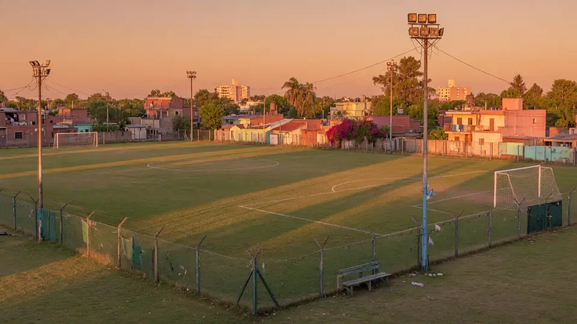
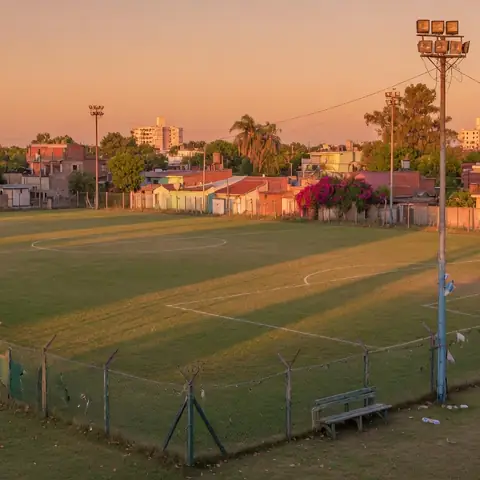

Canchas de fútbol · Liga · Berazategui
Tu partido del finde, en Sourigues.
Canchas de fútbol, liga y torneos sobre Camino General Belgrano. Consultá horarios libres, inscripción a la liga y fixture por WhatsApp.
- Horario
- 📍 Sourigues

Servicios
El complejo
Canchas de fútbol 11
Según su página de Facebook: 6 canchas (cantidad a confirmar).
Liga y torneos
Inscripción de equipos, fechas y fixture.
Vestuarios
Para cambiarte antes y después del partido.
Buffet
Algo para comer y tomar en el predio.
Fotos y filmaciones
De los partidos, según su descripción pública.
Ambulancia en el predio
Seguridad para los jugadores.
Fuente: Descripción pública del complejo (Facebook vía guiabbb) y complejo.ar.
Liga Aylen
Fixture y resultados
Los resultados de cada fecha, actualizados por el complejo. Así los equipos no tienen que preguntar.
Equipos y resultados ficticios, solo para mostrar cómo se vería.
Galería
Fotos

Acá va una foto real del negocio
Acá va otra foto real (con permiso)
Las dos primeras son ilustrativas (IA). En la versión final van fotos reales que aporte el negocio.
Preguntas frecuentes
Antes de escribir
¿Qué días abren?
Sábados de 12 a 21 h y domingos de 8 a 21 h (según directorios públicos; confirmar).
¿Cómo inscribo a mi equipo en la liga?
Escribí por WhatsApp con el nombre del equipo y la categoría. Te pasan requisitos y valores.
¿Se puede alquilar cancha suelta?
Consultá disponibilidad por WhatsApp.
¿Hay vestuarios y buffet?
Sí, según la descripción pública del complejo.
Contacto
Dónde y cuándo
- Dirección
- Camino General Belgrano 3799, Sourigues, Berazategui
- Teléfono
- +54 11 6183-7849 · WhatsAppa confirmar
- Página de Facebook
| Lunes | Cerrado |
|---|---|
| Martes | Cerrado |
| Miércoles | Cerrado |
| Jueves | Cerrado |
| Viernes | Cerrado |
| Sábado | 12:00 a 21:00 |
| Domingo | 08:00 a 21:00 |